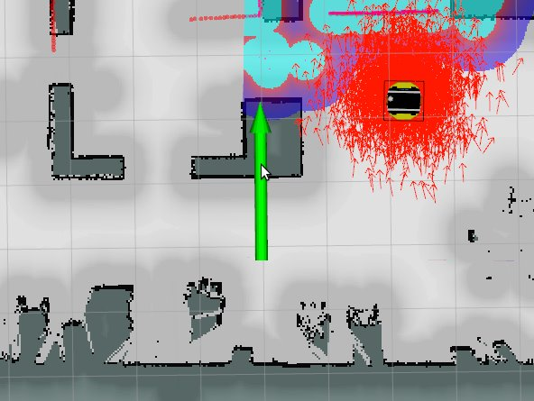

Mobile Robot
Localization
The localization of robot in the map is required to use the naviation stack in proper way. It can be made by publishing a pose on the topic

/initialpose : geometry_msgs/msg/PoseWithCovarianceStamped
{kind=link}
Mapping
For creating a map, we use the slam_toolbox.
Creating map
Stop all the running nodes with
sudo systemctl stop ibt_ros2_bringup.service
Run the mapping bringup node, which enable only the mobile base, without navigation:
sudo systemctl start ibt_ros2_mapping.service
Warning
Do not close this service until saving the map.
After starting the mapping, in the RViz or Foxglove, the initial stripes of the maps can be found
Navigate the robot around the environment with the joystick, in order to further build the map.
Saving map
To save the map, use the following command
ros2 service call /slam_toolbox/save_map slam_toolbox/srv/SaveMap "name: data: '~/ibt'"
- In the home dir will be appears
ibt.pgm
ibt.yaml
Warning
The default name of the map is ibt. If you want to save the map with a different name, change the name field in the launch file ibt_ros2_bringup/launch/neo.launch.py or simply do a replacement with the command above.
Battery state
The information about the battery state can be obtained from
- Publisher
/battery_state: sensor_msgs/msg/BatteryState
Docking
Work in progress
Safety areas
You can select the safety areas in accordance with the environment, where the robot will be allowed to move.
- Services server
/sick/setOutput: ibt_ros2_interfaces/srv/SetAttrAll